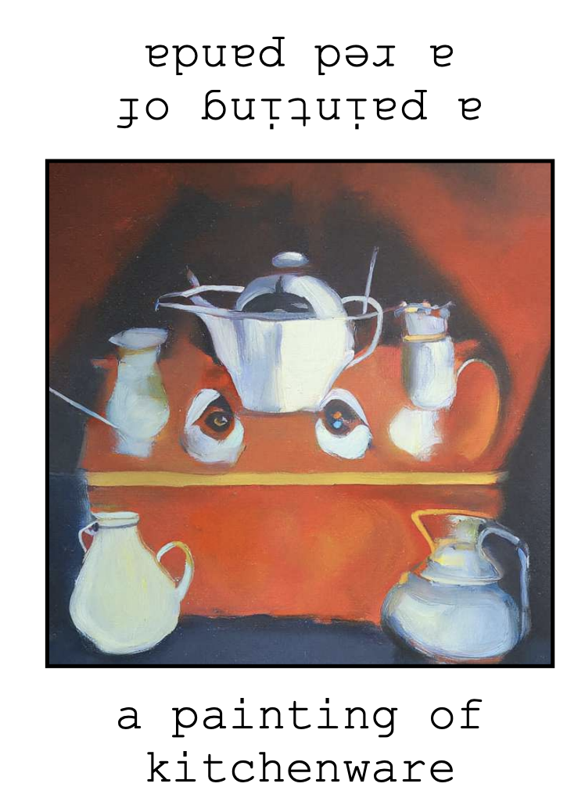
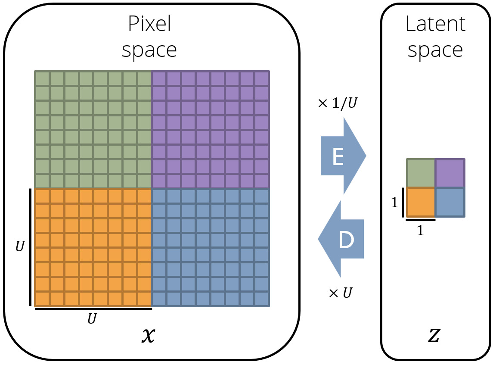
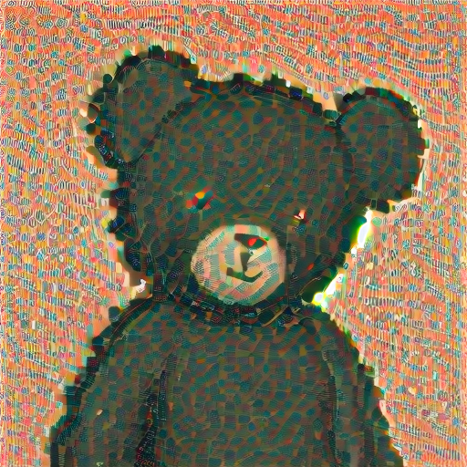
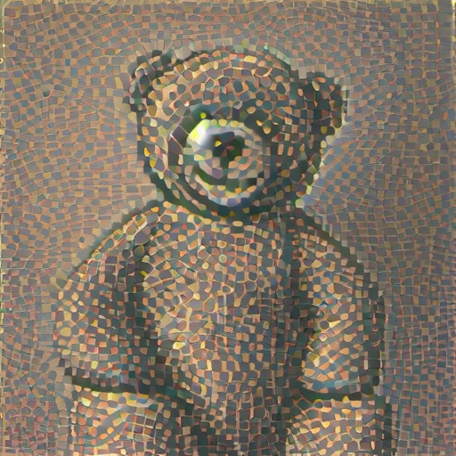
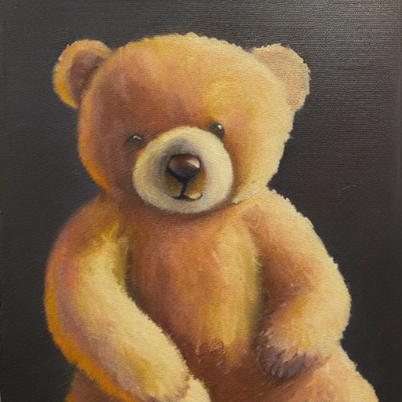

Trying to Adapt Visual Anagrams to use Latent Diffusion
Visual Anagrams
This semester in my Deep Learning course, I learned about the Visual Anagrams paper (Geng, Park, and Owens, CVPR 2024). The authors cleverly use diffusion models to generate optical illusions that can look like one image from one angle and a different image when rotated.

They achieve this by feeding in two natural language prompts. During inference, they start with an image that is pure noise. They pass it through the diffusion model conditioned on the first prompt to predict the noise. At the same time, they also pass the rotated version of the image into the diffusion model conditioned on the second prompt. This gives them two noise estimates. They average the two noise estimates together and subtract that from the image. They repeat this for many timesteps to get the final result.
The final results are fun to look at and could have cool applications. For example, imagine a billboard in Times Square that looks like one advertisement from far away and another image to pedestrians up-close.
The authors used pixel-space diffusion, which means the inputs to the denoiser network at every step are the entire 64x64x3 image data. It's more common nowadays to use latent diffusion, which is a type of diffusion model that uses a VAE to convert the image to and from a smaller 'latent' space where the denoiser network operates. This makes inference faster and allows you to generate larger, higher quality images.

However, the authors found that visual anagrams don't work in the latent space, because the latent space is not equivariant. That means that if you rotate an image's latent values, that doesn't necessarily mean you will exactly get the rotated image out. Rotations in the latent space don't correspond to rotations in the image space.
Unfortunately this means the authors were limited to using older models like DeepFloyd that support pixel-based diffusion, rather than newer models like Stable Diffusion which use latent diffusion and are more powerful.
Can we adapt Visual Anagrams to use latent diffusion?
If it's possible to use latent diffusion to create visual anagrams, it could be much more useful.
I found a 2025 paper called EQ-VAE that addresses the problem of non-equivariant latent spaces, with the intention of making diffusion training faster. They add an equivariance term to the VAE's training loss and fine-tune the VAE that comes with Stable Diffusion for a few epochs. The resulting "EQ-VAE" has a latent space that is equivariant.
My idea was to combine the two papers: Replace Stable Diffusion 1.5's VAE with EQ-VAE. This is a very simple one-line change. Then, we could run Visual Anagrams using this new latent diffusion model, allowing for higher quality images.
What happened when I tried it
I ran the new model to generate a teddy bear. However, my output looked a bit strange. The bear was recognizable but covered in a strange thatched texture. When I ran the same prompt through the original, unaltered Stable Diffusion model, the output was clean.

SD 1.5 + EQ-VAE

SD 1.5 + EQ-VAE

SD 1.5 + original VAE
Eventually, through some Googling and experimenting, I learned why. The Stable Diffusion UNet was trained to denoise latents that come from the original SD-VAE. It learned that VAE's latent space very precisely: what magnitudes to expect and what feature vectors tend to appear together. EQ-VAE is a fine-tuned version of SD-VAE, and the reconstruction quality is nearly identical. But the latents themselves are now distributed slightly differently, because the encoder has been pushed to organize them so that rotations make sense.
However, once the VAE has been fine-tuned away to become EQ-VAE, it no longer 'fits in' with the UNet. When it denoises the images in the EQ-VAE's latent space, it produces the thatched texture.
My takeaway is that even if one portion of an architecture was fine-tuned from another model (EQ-VAE was fine-tuned from SD 1.5's VAE), you can't just plug that EQ-VAE back into SD 1.5's architecture.
Coming back to my original question: if I wanted to use a latent diffusion model like Stable Diffusion to make visual anagrams, I would need both an equivariant VAE and a UNet trained from scratch on top of it. EQ-VAE is half of that, but as far as I can tell, no one has put the other half together yet. There isn't a strong, off-the-shelf latent diffusion model whose latent space is also equivariant. Until there is, visual anagrams are stuck in pixel space.